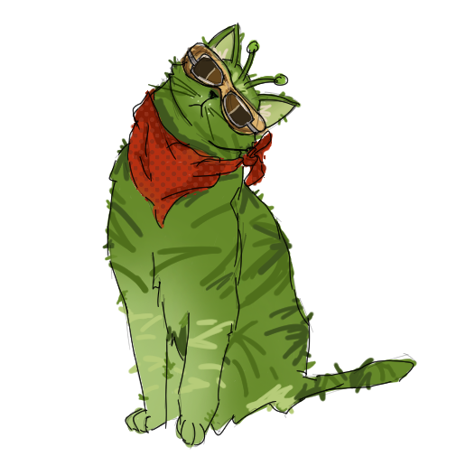

What is Dusty's Star Log?
This website is dedicated to the learning and understanding of stellar evolution. This concept is better known as the lifecycle of stars. Dusty's Star Log will discuss various types of stars, from small to huge to extremes.
Before you explore these stars, you must know that all stars begin in nebulae, which are clouds made up of gas and dust. Gravity will cause pockets within a nebula to collapse under their own weight. The material in the center of this collapse begins to heat up, bringing about a star in the making. After their birth, stars will live for millions to trillions of years! Finally, they die in a range of ways from fading away to exploding. This extrordinary cycle even contributes to the science behind where the atoms in our own bodies came from!
Stellar evolution can be overwhelming. Dusty's Star Log breaks down stellar evolution through examples. These log entries will be small and consistent, making it easier to learn star types.
- Start by logging in to open your star log.
- Pick a life stage to explore: Main Sequence, Evolved Giants, Stellar Remnants, or Rare & Extreme.
- Then pick a star type to read Dusty's log entry.